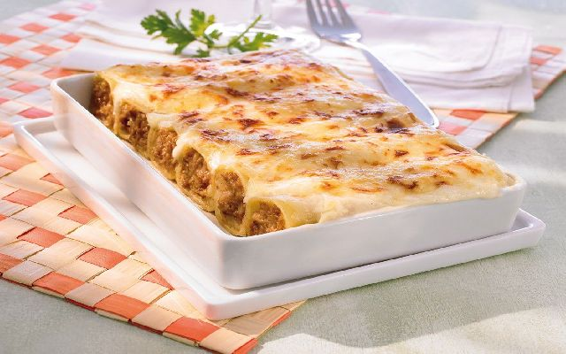

Tiempo aproximado: 30 minutos
- 18 placas de canelones.
- 350 gr de ternera estofada.
- 200 gr de salchichas frescas.
- 100 gr de queso parmesano rallado.
- 1 dl de aceite de oliva.
- 2 cebollas.
- 2 dientes de ajo.
- Miga de pan remojada en caldo.
- 1/8 de pastilla de caldo.
- Salsa bechamel. Ver receta 31.
- Salsa de tomate. Ver receta 35.
En una cacerola cocemos las placas de canelones.
Picamos las cebollas y los ajos.
Trituramos el estofado.
En una cazuela doramos las cebollas y los ajos.
Añadimos la carne de las salchichas y el estofado.
Dejamos cocer 5 minutos removiendo hasta conseguir una masa homogenea.
Incorporamos 10 cucharadas de salsa de tomate, y la miga de pan en remojo del caldo, y 25 gr de parmesano.
Rellenamos los canelones.
Los colocamos sobre una fuente y los cubrimos con salsa bechamel espolvoreamos con el resto de queso.
Por ultimo gratinamos 10 minutos a 180º.
Autor: Carlos